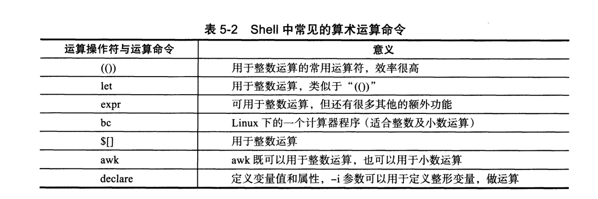
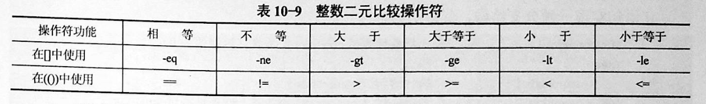

Contents
3.3. 3 运算符¶
整数运算的4种方式 
①
expr 2 + 3
expr $num1 + $num2
hujianli=`expr $num1 + $num2`
echo $hujianli
#r=`expr 4 + 5`
②
echo $[3+4]
sum=$[3+4]
echo $sum
echo $[$num1+$num2]
$[算术式] #r=$[4+5]
sum=$[sum+1]
echo $sum
③
$(( )) # 整数运算 #r=$((2+5*8))
r=$((2+5*8))
echo $r
sum2=$((num1+num2))
或者
sum3=$(($num1+$num2))
echo $((sum++))
echo $((sum--))
④
let 算术式 #let r=8+16
let sum=1+1
echo $sum
i=0
let i++
echo $i
let let # 运算 let x=16/4 let x=5**5
awk实现计算
[root@k8s-master ~]# echo "7.7 3.8"|awk '{print ($1-$2)}'
3.9
[root@k8s-master ~]# echo "358 113"|awk '{print ($1-3)/$2}'
3.14159
[root@k8s-master ~]# echo "3 9"|awk '{print ($1+3)*$2}'
54
declare(同typeset)命令的用法
# 使用declare -i参数可以将变量定义为整形
[root@k8s-master ~]# declare -i A=30 B=7
# 因为是整形了可以直接进行运算了
[root@k8s-master ~]# A=A+B
[root@k8s-master ~]# echo $A
37
declare -i 变量=算术式 #declare -i r=8+16
+ - * / ** # 分別为 "加、減、乘、除、密运算"
& | ^ ! # 分別为 "AND、OR、XOR、NOT" 运算
% # 余数运算
算术代换：$(())
用于算术计算，$(())中的Shell变量取值将转换成整数，同样含义的$[]等价例如：
itcast$ VAR=45
itcast$ echo $(($VAR+3))
$(())中只能用+-*/和()运算符，并且只能做整数运算。
$[base#n],其中base表示进制,n按照base进制解释，后面再有运算数，按十进制解释。
echo $[2#10+11]
echo $[8#10+11]
echo $[10#10+11]
expr
expr 14 % 9 # 整数运算
SUM=`expr 2 \* 3` # 乘后结果赋值给变量
LOOP=`expr $LOOP + 1` # 增量计数(加循环即可) LOOP=0
expr length "bkeep zbb" # 计算字串长度
expr substr "bkeep zbb" 4 9 # 抓取字串
expr index "bkeep zbb" e # 抓取第一个字符数字串出现的位置
expr 30 / 3 / 2 # 运算符号有空格
expr bkeep.doc : '.*' # 模式匹配(可以使用expr通过指定冒号选项计算字符串中字符数)
expr bkeep.doc : '\(.*\).doc' # 在expr中可以使用字符串匹配操作，这里使用模式抽取.doc文件附属名
数值测
#如果试图计算非整数，则会返回错误
rr=3.4
expr $rr + 1
expr: non-numeric argument
rr=
expr $rr + 1
6
bc
echo "m^n"|bc # 次方计算
seq -s '+' 1000 |bc # 从1加到1000
seq 1 1000 |tr "\n" "+"|sed 's/+$/\n/'|bc # 从1加到1000
#浮点数计算方法
#----------------------------------------------------
#方法1
#----------------------------------------------------
n=`echo "scale=2;172 / 2"| bc`
echo $n
#---------------------------------------------------
#方法2
#---------------------------------------------------
product=`awk 'BEGIN {x=5.3;y=6; printf "%.2f %.3f",x*y,x/y;}'`
echo $product
3.3.1. 1 Shell表达式¶
3.3.2. 1.1 整数测试¶
整数测试有两种形式的语法：
test number1 op number2
或者
[ number1 op number2 ]
比较符 描述 示例
-eq，equal 等于 [ 1 -eq 1 ]为 true
-ne，not equal 不等于 [ 1 -ne 1 ]为 false
-gt，greater than 大于 [ 2 -gt 1 ]为 true
-lt，lesser than 小于 [ 2 -lt 1 ]为 false
-ge，greater or equal 大于或等于 [ 2 -ge 1 ]为 true
-le，lesser or equal 小于或等于 [ 2 -le 1 ]为 false
· 整数二元比较操作符 
[root@monitor ~]# [ 1 -gt 1 ] && echo true || echo false
false
[root@monitor ~]# [ 1 -ne 1 ] && echo true || echo false
false
[root@monitor ~]# [ 1 -eq 1 ] && echo true || echo false
true
[root@monitor ~]# [ 1 -ne 1 ] && echo true || echo false
false
[root@monitor ~]# [ 1 -gt 1 ] && echo true || echo false
false
[root@monitor ~]# [ 2 -gt 1 ] && echo true || echo false
true
[root@monitor ~]# [ 2 -lt 1 ] && echo true || echo false
false
[root@monitor ~]# [ 2 -le 1 ] && echo true || echo false
false
举例
#!/usr/bin/env bash
#usage:xxx
#scripts_name:${NAME}.sh
# author：xiaojian
read -p "How old are you? " age
# 使用Shell算术运算符(())进行条件判断
if ((age<0||age>120)); then
echo "Out of range!"
exit 1
fi
# 使用多分支if语句
if ((age>=0&&age<13)); then
echo "Child!"
elif ((age>=13&&age<20));then
echo "Callan!"
elif ((age>=20&&age<30));then
echo "P III!"
elif ((age>=30&&age<40));then
echo "P IV!"
else
echo "Sorry I asked."
fi
3.3.3. 1.2 算术运算符¶
假定变量 a 为 10，变量 b 为 20：
注意：运算符两边有空格
运算符 |
说明 |
举例 |
|---|---|---|
‘+’ |
加法 |
|
‘-’ |
减法 |
|
* |
乘法 |
|
/ |
除法 |
|
% |
取余 |
|
= |
赋值 |
a=$b 将把变量 b 的值赋给 a |
== |
相等 |
用于比较两个数字，相同则返回 true [ $a == $b ] 返回 false |
!= |
不相等 |
用于比较两个数字，不相同则返回 true。 [ $a != $b ] 返回 true |
A=3
B=6
1、let 算术运算表达式
let C=$A+$B
2、$[算术运算表达式]
C=$[$A+$B]
3、$((算术运算表达式))
C=$(($A+$B))
4、expr 算术运算表达式，表达式中各操作数及运算符之间要有空格，而且要使用命令引用
C=`expr $A + $B`
* 使用expr外部程序¶
expr是一个Shell命令，可以计算某个表达式的值，其基本语法如下：
expr expression
# 计算 2 和 100 的和，即 102
result='expr 2 + 100'
echo "$result"
# 计算 2 和 5 的乘积，即 10
result='expr 2 \* 5'
echo "$result"
# 计算 24 和 8 的商，即 3
result='expr 24 / 8'
echo "$result"
* 使用$((…))¶
使用这种形式来进行算术运算写法比较自由，无需对运算符和括号做转义处理，可以采用松散或者紧凑的
# 紧凑格式，计算 3 和 6 的和
result=$((3+6))
echo "$result"
# 松散格式，计算 3 和 9 的和
result=$(( 3 + 9 ))
echo "$result"
# 计算 3 和 6 的乘积
reuslt=$(( 3 * 6 ))
* 使用$[…]¶
使用一个方括号同样可以执行算术运算，这种语法的特点与使用两个圆括号相同，无论是采用紧凑格式还是松散格式，都可以得到正确的结果。另外，算术表达式中的星号和圆括号也无需转义处理。
# 加法运算
result=$[4+5]
echo "$result"
# 复合运算
result=$[(1+2)*3]
echo "$result"
# 幂运算
result=$[ 2 ** 4 ]
echo "$result"
* 使用let命令¶
使用let命令可以执行一个或者多个算术表达式，其中的变量名无需使用$符号。如果表达式中含有空格或者其他特殊字符，则必须将其引用起来。
# 加法运算
let n=n+1
echo "$n"
# 乘法运算
let n=n*10
echo "$n"
# 幂运算
let n=n**2
echo "$n"
3.3.4. 2 复合算术运算符¶
常用位运算符
运算符 说 明 举 例
<< 左移 4 << 2，将4左移2位，结果为16
>> 右移 8 >> 2，将8右移2位，结果为2
& 按位与 8 && 4，将8和4进行按位与运算，结果为0
| 按位或 8 | 4，将8和4进行按位或运算，结果为12
～ 按位非 ～8，将8进行按位非运算，结果为-9
^ 按位异或 10 ^ 6，将10和6进行按二进制位异或运算，结果为12
3.3.5. 3 自增/自减运算符¶
运算符 说 明
++variable 先将变量variable的值加1，然后再赋给variable
--variable 先将变量variable的值减1，然后再赋给variable
variable++ 先使用variable的值，然后再将该变量的值加1
variable-- 先使用variable的值，然后再将该变量的值减1
#! /bin/sh
# 定义变量 x
x=5
# 将变量 x 先自增，然后再计算表达式的值
x=$[ x + (++x) ]
echo "$x"
# 将变量先自减，然后再计算表达式的值
x=$[ --x ]
echo "$x"
# 先计算表达式的值，然后再自增
x=$((x++))
echo "$x"
# 先计算表达式的值，然后再自减
x=$(( x-- ))
echo "$x"
3.3.6. 4 数字常量的进制¶
默认情况下，Shell总是以十进制来表示数字。但是，用户也可以在Shell中使用其他进制来表示数字，例如二进制、八进制和十六进制。在Shell中，用户可以使用两种语法来表示不同的进制，首先是增加前缀，例如以0开头的数字表示八进制，以0x开头的数字表示十六进制。第二种语法是使用井号“#”，例如2#1000表示二进制，8#42表示八进制。
#! /bin/sh
# 十进制 20
((x=20))
echo "$x"
# 八进制 20
((x=020))
echo "$x"
# 十六进制 20
((x=0x20))
echo "$x"
3.3.7. 5 条件测试¶

整数的关系运算，可以使用Shell的算术运算符(())
3.3.8. 6 布尔运算符¶
运算符 说明 举例
! 非运算，表达式为 true 则返回 false，否则返回 true [ ! false ] 返回 true
-o 或运算，有一个表达式为 true 则返回 true [ $a -lt 20 -o $b -gt 100 ] 返回 true
-a 与运算，两个表达式都为 true 才返回 true [ $a -lt 20 -a $b -gt 100 ] 返回 false
3.3.9. 7 逻辑运算符¶
运算符 说明 举例
&& 逻辑的 AND [[ $a -lt 100 && $b -gt 100 ]] 返回 false
|| 逻辑的 OR [[ $a -lt 100 \|\| $b -gt 100 ]] 返回 true
[ condition ] && action; # 如果 condition 为真，则执行 action
[ condition ] || action; # 如果 condition 为假，则执行 action
3.3.10. 8 文件测试¶
操作符 说 明
-a file 文件是否存在。如果文件file存在，则结果为0
-b file 文件是否存在，且为块文件。如果文件file是一个已经存在的块文件，则结果为0
-c file 文件是否存在，且为字符文件。如果file是一个已经存在的字符文件，则结果为0
-d file 文件是否存在，且为目录。如果文件file是一个已经存在的目录，则结果为0
-e file 同-a操作符
-s file 文件的长度是否大于0或者文件为非空文件。如果file是一个非空文件，则结果为0
-f file 文件存在，并且为常规文件。如果file是一个已经存在的常规文件，则结果为0
-w file 文件是否存在且可写。如果文件file是一个可写文件则结果为0
-L file 文件是否存在，并且为符号链接。如果文件file是一个已经存在的符号链接，则结果为0
-u file 文件是否设置suid位。如果文件file已经设置了suid位，则结果为0
-r file 文件是否存在，并且可读。如果文件file是一个已经存在的可读文件，则结果为0
-x file 文件是否存在，并且可执行。如果文件file是一个已经存在的可执行文件，则结果为0
[ -d DIR ] 如果DIR存在并且是一个目录则为真
[ -f FILE ] 如果FILE存在且是一个普通文件则为真
[ -z STRING ] 如果STRING的长度为零则为真
[ -n STRING ] 如果STRING的长度非零则为真
[ STRING1 = STRING2 ] 如果两个字符串相同则为真
[ STRING1 != STRING2 ] 如果字符串不相同则为真
[ ARG1 OP ARG2 ] ARG1和ARG2应该是整数或者取值为整数的变量，OP是-eq（等于）-ne（不等于）-lt（小于）-le（小于等于）-gt（大于）-ge（大于等于）之中的一个
示例
#!/usr/bin/env bash
# 文件是否存在
test -e /bin/cp && echo "The command $_ found." || echo "The command $_ not found."
# 是否是一个普通文件
test -f /etc/hosts && echo "The command $_ found." || echo "The command $_ not found."
# 是否是一个目录
test -d /local && echo "The command $_ exist." || echo "The command $_ not exist."
# 是否是一个软连接
test -h /bin/sh && echo "The file $_ is a symbolic link." || echo "The file $_ not a symbolic link."
# 是否是可执行文件
test -x /bin/cp && echo "The file $_ is executable." || echo "The file $_ is not executable."
3.3.11. 9 字符串测试¶
假定变量 a 为 "abc"，变量 b 为 "efg"：
在进行字符串比较时，最好使用双中括号 [[ ]]. 因为单中括号可能会导致一些错误，因此最好避开它们。
检查两个字符串是否相同：
[[ $str1 = $str2 ]]
测试两个字符串是否相同。
● [[ $str1 = $str2 ]] ：当 str1 等于 str2 时，返回真。也就是说， str1 和 str2 包
含的文本是一模一样的。
● [[ $str1 == $str2 ]] ：这是检查字符串是否相同的另一种写法
● [[ $str1 > $str2 ]] ：如果 str1 的字母序比 str2 大，则返回真。
● [[ $str1 < $str2 ]] ：如果 str1 的字母序比 str2 小，则返回真
● [[ $str1 != $str2 ]] ：如果 str1 和 str2 不相同，则返回真。
● [[ -z $str1 ]] ：如果 str1 为空串，则返回真。
● [[ -n $str1 ]] ：如果 str1 不为空串，则返回真。
运算符 说明 举例
= 检测两个字符串是否相等，相等返回 true。 [ $a = $b ] 返回 false。
!= 检测两个字符串是否相等，不相等返回 true。 [ $a != $b ] 返回 true。
-z 检测字符串长度是否为0，为0返回 true。 [ -z $a ] 返回 false。
-n 检测字符串长度是否为0，不为0返回 true。 [ -n "$a" ] 返回 true。
str 检测字符串是否为空，不为空返回 true。 [ $a ] 返回 true。
3.3.12. 10 Shell 中的中括号用法总结¶
http://www.runoob.com/w3cnote/shell-summary-brackets.html
举例说明¶
#!/usr/bin/env bash
# && 和 || 多用于 [[ ]]结构
# -a 和 -o 多用于 []结构
#例如
str1="Not empty"
str2=""
if [[ -n $str1 ]] && [[ -z $str2 ]];
then
echo str1 is nonempty and str2 is empty string.
fi
test $(id -u) -eq 0 && echo "You?are?root" || echo "You?are?NOT?root"
#&&
command1 && command2
#只有当command1返回一个退出状态码0时，command2才会执行。
[[ `id -u` -eq 0 ]] || { echo "you are not root!!"; exit 1; }
#使用grep进行判断
grep "^yantaol" /etc/passwd && echo "The?account?found?in?/etc/passwd"
#方式1
if [[ -n $var && -e $var ]];then
echo "\$var?is?not?null?and?a?file?named?$var?exists."
fi
if [[ $num -ge 90 && $num -le 100 ]]
then
echo "Excellent!"
elif [[ $num -ge 80 && $num -lt 90 ]]
then
echo "Good!"
fi
#方式2
if [ -n $var ] && [ -e $var ]
then
echo "\$var?is?not?null?and?a?file?named?$var?exists."
fi
num=$1
#-a 和 -o的使用
#?如果$num的值大于等于90且小于100，
if [ "$num" -ge 90 -a "$num" -lt 100 ]; then
:
elif [ "$num" -ge 80 -a "$num" -lt 90 ];then
:
elif [ "$num" -ge 60 -a "$num" -lt 80 ];then
:
fi
if [ "$var" -eq 98 -o "$var" -eq 47 -o "$var" -eq 68 ]
then
echo "Test?succeeds."
else
echo "Test?fails."
fi
[ ! -d /home/yantaol ] && mkdir /home/yantaol || echo "The?directory?is?exist."
3.3.13. 11 字符串判断中x的作用¶
范例
if [ "x${var}" == "x" ]
if [ x"$DPVS_TYPE" == x"SNAT" ]
目的
防止出现语法错误。
[ x$1 = x ] is true if $1 is unset/null/empty or not.
Try yourself with:
TEST= ;[ x$TEST = x] && echo "TEST is unset"
and
TEST=lolz ;[ x$TEST = x ] && echo "TEST is unset"
类似于[ -z "${1:+x}" ]操作，当$1为空时，赋值给x，避免判断直接报错。